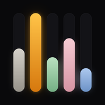
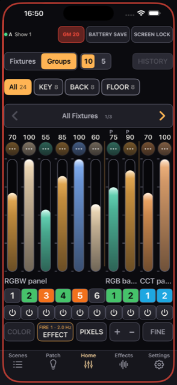
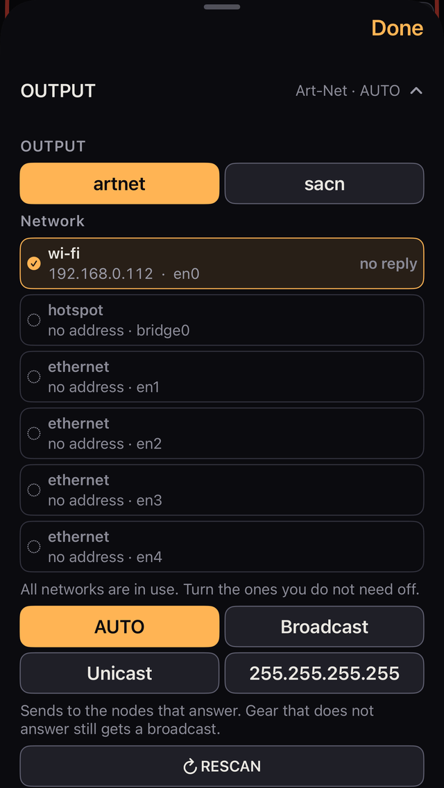
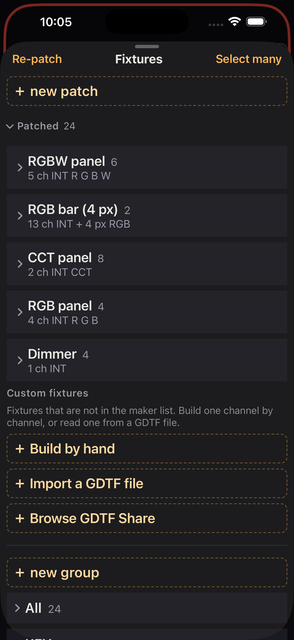
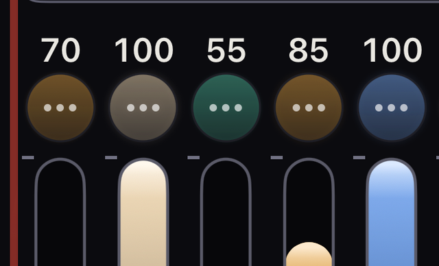
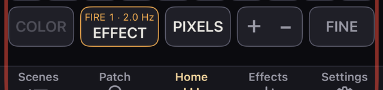
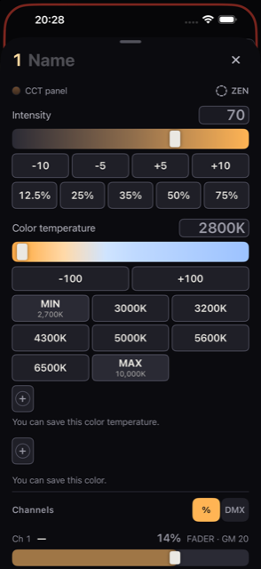
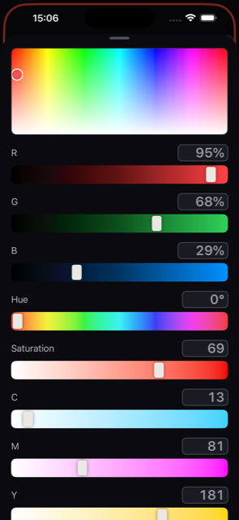
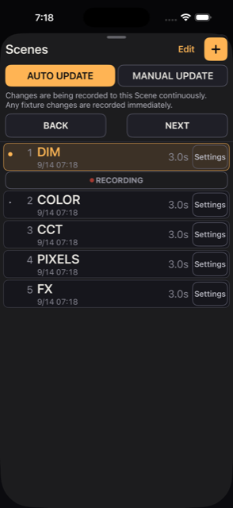

iPhone Lighting Console
A lighting console for film and television, built for iPhone. Control fixtures over Art-Net, sACN and CRMX, with color, scenes, effects and diagnostics in your pocket.
More: Fixture / GDTF Output / Diagnostics MIDI Session
Last updated 2026-09-13 ・ checked on 0.2 build 233
You do not need a single light to get this far. Button names are shown exactly as they appear on screen.
The app opens with a practice rig of 24 fixtures already patched. Three minutes here will show you most of how Kanau works.
GM 20 is pulsing red. Tap it.→100. Everything gets brighter.A fader moves by the distance your finger travels, not the place you touched. Where you start makes no difference to the result.
Intensity sets brightness, Color temperature sets white, RGB sets color.Every fixture carries different features, so the items you see change with it.
Scenes tab at the bottom.DIM, COLOR, CCT, PIXELS, FX. Tap one.Anything you change after a recall is saved back into that scene. Lock a scene to protect it (chapter 08).
Even with no lights attached, Settings → DMX MONITOR shows the numbers Kanau is actually sending. Move a fader and the numbers move with it.
The demo has 24 fixtures from Generic: DIMMER, CCT, RGB, RGBW and BAR (4 pixels). They are in three groups of eight, called KEY, BACK and FLOOR.
The grand master starts at 20, six fixtures are marked for Battery save and carry a green label, FLOOR has a fire effect running, and five scenes are saved. None of it claims to be a real product.
Once the demo makes sense, move to your own gear.
Settings → OUTPUT, check that Nodes answering is 1 or more and Sending is green (chapter 02).Patch → ＋ new patch → add new fixture, then set the model, DMX mode, universe and address. Match the fixture's own settings (chapter 03).Scenes to store the look (chapter 08).The practice rig is an ordinary show. Delete it when you patch your own lights, or make a new one with Settings → SHOWS → NEW SHOW.
WAITING or SHARED. Both are explained in chapter 02.A fixture with Lock on will not go out when you press blackout, and will not go out when you pull the grand master to zero. Check that your locks are clear before a take. The count of fixtures still lit during a blackout is shown next to the green 🔒 at the top of the screen.
What is on the Home screen, from the top down, and how to read it when something looks wrong.

12345678Before the detailed tables, these are the only places you need to know.
| Place | What it does |
|---|---|
| GM | Overall brightness, at the top of the screen |
| Fixtures / Groups | Chooses which fixtures appear |
| Fader | Sets intensity |
| Scenes | Stores looks and brings them back |
| Patch | Registers fixtures |
| Effects | Lists and stops running effects |
| Settings | Output, shows, MIDI, session |
Everything below is the detail.
Home is where you work. Tapping another tab opens a panel over it. Drag the handle at the top down, or tap Done, to come back to Home.
| Tab | What it is for | See |
|---|---|---|
| Scenes | Saving and recalling looks | Chapter 08 |
| Patch | Fixtures, addresses, modes, groups | Chapter 03 |
| Home | Setting intensity with faders | Chapter 04 |
| Effects | Listing, adjusting and stopping effects | Chapter 09 |
| Settings | DMX output, shows, MIDI, session, preferences | Chapters 02, 11–13 |
On the left is the protocol and the connection state. ARTNET is Art-Net, SACN is sACN, BLUETOOTH means only Bluetooth is sending.
| Shown | Meaning |
|---|---|
| Green dot | Sending |
| Amber dot | Slowed down, or reconnecting (Reconnecting…) |
| Red dot, No node | Nothing is answering |
| Red dot, Blocked | iOS is stopping the traffic |
| Grey dot, idle | Stopped |
| WAITING and an IP | Another console was found, so this one is holding back |
| SHARED and an IP | Another console is sending to the same universe. This one is still sending too |
| JOINED and a name | In a session. DMX goes out from the host |
A green dot does not prove the light received anything. Chapter 02 explains how to check; chapter 14 covers what to do when it goes wrong.
The middle and right of the line carry these.
| Item | Tap | Hold, or note |
|---|---|---|
| GM 100 | Opens the grand master panel | Hold for its settings. Pulses red below 100 |
| B.O. | Clears the blackout | Replaces GM while blacked out |
| 🔌 n (red) | Nothing | Universes switched off. Turn them back on in Settings → OUTPUT |
| 🔒 n (green) | Nothing | Locked fixtures still lit during a blackout |
| BATTERY SAVE | Turns it on and off | Hold to set the amount and the fade |
| SCREEN LOCK | Does not lock | Hold for 0.5 seconds to lock the screen |
| Item | How to use it |
|---|---|
| Fixtures / Groups | Switches between showing by model and showing by group |
| 10 / 5 | Faders on a page. Five makes each one wider |
| HISTORY | Opens the list of earlier states |
| Model and group buttons | Tap to show those fixtures. Hold to set color and intensity for all of them |
| CLEAR n | Clears the selection. The light does not change |
| ‹ / › | Moves between pages |
| Number | Intensity from 0 to 100. Shown large at the top while you drag |
| Round fixture icon (…) | Tap to select. Hold to open that fixture's panel |
| Fader | Drag up and down to set intensity |
| Model name | Marks a run of the same model and mode |
| Number button | The fixture number. In piano mode it changes intensity while held |
| ⏻ | Turns the output off and on, keeping the value |
| COLOR | Sets color and intensity for the selected fixtures |
| EFFECT | Applies an effect to the selected fixtures |
| PIXELS | Opens and closes the cells of pixel fixtures |
| ＋ − | Cycles piano mode: LOCK → ＋ → − |
| FINE | Cycles sensitivity: normal → FINE (1/10) → FINE+ (1/100) |
COLOR is unavailable with nothing selected, and with fixtures that have no color. EFFECT needs a selection. PIXELS needs a pixel fixture on the page.
| Color or mark | Meaning |
|---|---|
| Amber | Selected, or active |
| Red | Blackout, a low grand master, a network problem, piano mode. Something to check |
| Green | Sending. Fixture Lock. BATTERY SAVE on |
| Purple | Output switched off, or the screen locked |
| Cyan | Being worked by the other device in a session |
| Orange | At a limit you set |
| Grey | Unavailable, or stopped |
The round icon carries the fixture's color and its real output. A selection shows an amber rim, a switched-off output a purple ring and ⏻, a lock a green outer ring and 🔒. A running effect makes it move.
A red pulse around the edge of the screen means the grand master is below 100. A green edge means BATTERY SAVE is on. With both, red is outside and green inside. During a blackout the red edge is replaced by B.O. in the status line.
Setting up the link to your lighting gear, and checking that it is getting there.

12345Kanau sends every patched universe continuously, normally at 44 Hz. There is no start button. Sending can pause or stop when another console is detected, when the network settings change, or when iOS withholds permission.
Art-Net and sACN are exclusive: pick one. CRMX over Bluetooth runs alongside either.
Network lists your Wi-Fi, Ethernet and Hotspot connections with their addresses and how many nodes answered on each.
If you use wired and Wi-Fi together, check that both appear in the list.
| Setting | Where it sends | When to use it |
|---|---|---|
| AUTO (Art-Net) | Unicast to the nodes that answered, plus one broadcast a second on each network. Broadcast only, if nothing answered | The normal choice |
| Broadcast (Art-Net) | Every frame to each network's subnet | When a node reports a wrong address and AUTO updates slowly |
| Unicast | Straight to the addresses you enter | When broadcast does not reach, or you want to name the target |
| 255.255.255.255 (Art-Net) | Broadcast on the segment. Does not cross a router | When addressing does not line up and ordinary broadcast fails. iOS may block it |
| Multicast (sACN) | The multicast address for each universe | The sACN default |
With Unicast, type the node's address and tap Add. With none entered you get No node IPs entered. and nothing is sent. Every universe goes to every address you enter.
If Nodes answering is 1 or more on AUTO but the lights only update about once a second, check whether the node is reporting the wrong address for itself. Look at Destination and try Broadcast. Chapter 14 covers the other causes of lag.
Tapping RESCAN under Art-Net refreshes the node list. Use it after adding gear, removing gear or changing an address. Left alone, a new node appears within about 3 seconds and a removed one disappears after about 10.
Sending continues while it scans. RESCAN is unavailable with no usable network.
A red banner reading iOS is blocking this. means one of these.
Universes lists each patched universe with its fixture count, how many are lit, and an ON/OFF switch.
OFF does not stop sending. It keeps sending zeros to that universe, so that a receiver cannot sit holding its last values and stay lit. The number of universes switched off appears next to 🔌 at the top of the screen.
If your node wants Net / Sub-Net / Universe instead of a single number, turn on Settings → SETTINGS → Art-Net → Net / Sub / Uni. The relationship is Net × 256 + Sub × 16 + Uni.
sACN priority can be 0, 100 or 200. The default is 100. Where several sources send the same universe, the receiver follows the highest priority.
The transmitter you pick carries universe 1 (U1). Next time, turning Bluetooth on reconnects to the same one.
Sending the same universe to the same fixture over both the network and Bluetooth can make it flicker. Check the warning in the CRMX section and turn one path off. Kanau will not choose for you.
If a transmitter refuses Art-Net after you turn Bluetooth off, check its own Bluetooth setting and restart it. On the Aputure Sidus Four, check the Sidus BT setting on the unit as well.
| Shown | What it means, and what to do |
|---|---|
| WAITING + IP | Another console was already sending when this one started, so this one is holding back. Stop the other one, or tap the message and choose Send anyway? → Send. If the other one is a Kanau host, you can join its session instead |
| SHARED + IP | Another console appeared after this one started. Sending continues, so stop one of them if you need to |
If two devices start together and both hold back, the one with the lower address starts sending again.
The lower half of OUTPUT is there to show you where things stopped. It is not a set of settings. When output is slow or missing, read it from the top (chapter 14).
| Item | How to read it |
|---|---|
| Destination | Where it is really going. ↦ after an address means unicast to a node that answered |
| Medium | The connections in use, for example wi-fi + ethernet |
| Sending | Packets in the last second. Around 44 is normal. nothing means none went out |
| Clock | The worst gap between sends. About 23 ms is normal. Over 100 ms points at the phone |
| Touch → wire | From your finger to the packet. About 25 ms is normal |
| Nodes answering | How many answered, with name, address, connection and round trip. The figure in brackets is the worst of the last 10 seconds |
| Type these into the node | The Net / Sub / Uni to enter on the node, when that display is on |
These narrow the problem down; they do not prove success. Sending can be green while a mismatch or a fault at the other end keeps the lights dark. Gear that does not answer polling shows 0 under Nodes answering even while it is receiving.
Settings → DMX MONITOR shows all 512 channels of each universe as they go out. It refreshes 10 times a second and does not affect sending.
Register the lights you are using, and set the model, DMX mode, universe, address, number and groups.
Intensity and color are set on Home (chapters 04 and 05).

| Field | What it is |
|---|---|
| Favourites | Star a model to reach it directly next time |
| Name | The display name. Defaults to the model, shared by every fixture of that model |
| Fixture number | The number you call it on the floor. May be left empty. Starts at the highest in use plus one |
| Label | A short mark for the display. Uses a default if left empty |
| How many | Up to 4,096 |
| Universe / Address | Defaults to U1 / 1. Changing the universe resets the address to 1. U0 is allowed |
| Offset | The spacing between fixtures. Filled in from the mode's channel count |
| Gap | Extra channels to leave between fixtures |
| Battery save | Marks the new fixtures for BATTERY SAVE |
| Label color | The background of the number. Seven colors, or none |
| Map | The 512-channel layout. Drag and release to set the start address |
Each fixture after the first starts at the previous start address plus Offset and Gap. Anything past 512 goes into the next universe. An Offset smaller than the mode's channel count raises a warning, but you can carry on.
Afterwards you get a result like Added 3 × Titan Tube — U1 1–15. Already patched lets you add more of a model you already have. Patched now shows the current layout.
| Number | What it is |
|---|---|
| Unit no. | A running number within the model. Assigned for you |
| Fixture number | The number you use on the floor. You set it |
Which one Home shows is set in Settings → SETTINGS → Fixture numbers → Show the fixture number. Unit no. is the default. Duplicate fixture numbers raise a warning but are allowed.
This version ships with 45 manufacturers, 578 fixtures and 11,347 modes. For anything not in the library, use the Generic definitions or Custom fixtures.
Generic includes Dimmer, Dimmer 16-bit, Bi-color, CCT, RGB, RGBW, Dimmer + RGB, Dimmer + RGBW, Bulb and Desk lamp.
Patched lists fixtures by model and mode. Tap a heading to fold it. Tap a fixture's row to open its patch settings.
⚠ marks an overlapping address or a run past channel 512. Sending continues while it is showing, so check the settings. n fixture data problems refers to faults found while loading fixture data; tap it for the detail.
Working in this list does not change which fixtures Home is showing.
Tap Select many and choose the fixtures. The ✓ on a model row takes all of that model.
| Action | What it does |
|---|---|
| Select all / Select none | Takes or clears everything, folded rows included |
| Name | Numbers the end of the name in the order you selected |
| Number | Sets fixture numbers in the order you selected |
| Address | Re-lays them from a universe, start address and gap |
| Battery | Marks or unmarks them for BATTERY SAVE |
| New group | Builds a group from the selection |
| Delete | Removes them. Check the count before you confirm |
Deleting a fixture also removes its intensity, color and limits, and takes it out of every scene. Deleting from within a group only removes it from that group; the fixture itself stays.
Only ranges large enough are offered. Overlapping fixtures are shown in red.
A fixture can be in several groups. It is not copied: changing it from any group changes the same fixture. Adding it to a group leaves it in All.
Tapping a group name lets you set the name, see the count and address range and layout, reorder, or delete it. Edit group — add & reorder adds and rearranges fixtures; Add to an existing group puts the current selection into a group you already have.
Whether Patch shows an All row is set in Settings → SETTINGS → Groups → Show the All row.
Custom fixtures holds definitions you add yourself. They are available to every show. Deleting a definition does not affect fixtures already patched from it.
SAVE & PATCH opens the patch screen with that definition selected. Remember on this device stores your sign-in; FORGET removes it. Definitions you already fetched stay. Your sign-in goes to GDTF Share.
＋ Import a GDTF file → ＋ Open a GDTF file, pick the .gdtf, check the mode and the import report, then save. No network is needed.
The report lists what could not be carried over. A 16-bit value split across distant addresses keeps only its coarse byte, unused addresses are held as empty slots, and channels on another DMX break are dropped. Where addresses overlap, the earlier channel wins. Unknown functions keep their original names.
A definition marked Imported data is not verified. should be checked against the real fixture. Fix wrong roles with SAVE & EDIT; the fix applies to fixtures you patch from it afterwards. This mode has no channels. means you should pick a different mode.
Open ＋ Build by hand and start from an empty definition or a template: Dimmer, CCT, Bi-color, RGB, HSI, x y, CCT + HSI, Dimmer + RGBW, Full color, Full color + white, Multi-emitter.
Give each channel a label, and set the role, 8 or 16 bit, default and real-world unit as needed. Channel numbers and the total are worked out for you. Leave a slot unused if you do not know its role, and you can still drive it from Channels. CREATE refuses to save while there is an ERROR.
Duplicate and edit lets you change the name, the color temperature range, channel roles and names, labels and defaults. The channel count, the 16-bit layout, the ranges and the switch structure cannot be changed.
The faders on Home. This is the heart of Kanau.
A fader responds to the distance your finger travels, not to the place you touched. You can drive it from the number, the round icon, or the empty space below the fader. It is built so you can work while looking at the stage instead of your hand.

The knob grows a little as you touch it, and nothing moves until you have dragged a short way, so resting a finger on it is safe. While you drag, the number, name and value appear large at the top of the screen. If you have set limits, it moves within them.
| Action | What happens |
|---|---|
| Short tap | Cycles normal → FINE (1/10) → FINE+ (1/100) → normal |
| Hold | The next step while held. Back to normal when you let go |
Switching mid-drag does not make the value jump. FINE also applies to raw channels and to Pan and Tilt.
Select two or more round icons, then drag one of the faders. They all move by the same amount, keeping the differences between them. When one reaches a limit the others carry on. Locked fixtures are left out.
This is not the same as working several fixtures in the COLOR panel, where they all land on the same value.
The ＋ − button at the bottom right sets the mode.
| Mode | While a number button is held |
|---|---|
| LOCK (the default) | Nothing changes |
| ＋ | Goes to the upper limit, 100 by default |
| − | Goes to the lower limit, 0 by default |
Let go and it returns to where it was. You can hold several at once, or slide sideways to play them in turn. Locked fixtures do not respond.
The buttons turn red while ＋ or − is armed. It is always LOCK at launch.
Tapping ⏻ turns a fixture's output off and on while keeping the value. It turns purple while off, and the number stays. Moving the fader while it is off does not light anything.
ON/OFF is the default. In the fixture's Switch function you can change it to FLASH ON or FLASH OFF, which last only while held. Locked fixtures do not respond.
Tapping GM at the top opens the grand master fader, B.O. and →100.
Holding GM offers 100, 75, 50, 25, 12.5 and 0. The 0 there turns the blackout on; it does not set GM to zero.
The fade for these buttons is set in Settings → SETTINGS → Master fade. SNAP is the default. Dragging the fader with a finger is always immediate.
A fixture with Lock on does not respond to GM or B.O. It stays lit. The count of locked fixtures still lit during a blackout is shown next to the green 🔒 at the top of the screen.
Fixtures shows by model and mode; Groups shows All and the groups you built. Tap a name to switch. One fader is always one fixture, even inside a group.
The order under All is set in Settings → SETTINGS → Order on All, either by model and running number or by fixture number. Inside a group it is the order you built.
‹ and › change page. Switching between 10 and 5 keeps the fixture you are working on in view.

COLOR and EFFECT need a selection. PIXELS goes grey when there is no pixel fixture on the page.
Tapping PIXELS opens the cells of any pixel fixtures on the page as their own faders. They appear as P1, P2 and so on, and each carries its own intensity and color. Tap again to fold them.
CLEAR n only clears the selection. Values and outputs are untouched.
Color and intensity for one fixture or many.
What you see depends on what the fixture actually has. A one-channel dimmer shows only Intensity. Kanau does not show controls a fixture does not have.

| How | What it works on |
|---|---|
| Hold a fixture icon | That one fixture |
| Hold a cell icon | That cell |
| Select fixtures, then COLOR | Everything selected |
| Hold a model or group button | Every fixture in it. All means every fixture |
With one fixture open, ‹ and › move to the next.
| Item | How it works |
|---|---|
| Intensity | 0 to 100, by slider, typing, ± buttons or presets |
| Color temperature (CCT) | In kelvin, within the fixture's range |
| Green / Magenta | The green–magenta correction. Back to neutral returns it to 0 |
| Crossfade | The balance between the white side and the color side. Which way round is up to the fixture |
| RGB and emitters | R, G, B, W, Amber, Lime, Cyan and whatever else the fixture carries |
| Hue / Saturation / CIE x / CIE y | Shown on fixtures that have them |
Intensity ±5 and ±10 snap to multiples of 5 or 10: from 47, +10 gives 50. The presets are 12.5%, 25%, 35%, 50% and 75%.
The CCT presets are 2700, 3000, 3200, 4300, 5000, 5600, 6500 and 10000 K. Beyond the fixture's range you land on its limit, marked MIN or MAX. A fixture with only two color temperatures shows two buttons instead of a slider.
The Green / Magenta steps can be edited by holding them. Where a fixture has more than one crossfade, the later ones appear just above the controls they feed.
| Item | What it is |
|---|---|
| Gel presets | LEE and Rosco presets for fixtures with RGB. Separate tables for 3200 K and 5600 K |
| Preset / Gel | The fixture's own built-in gels or color presets, chosen by number |
| Gels → x/y | LEE and Rosco chromaticities for fixtures with x and y |
The RGB values under Gel presets come from Astera's published color data. They carry no brightness, so set that with the fader. With a fixture's built-in presets, the app cannot always show which one is selected.
The list stays open after you pick, so you can try one after another. Close it with ✕. Whether it appears at all is set in Settings → SETTINGS → Gels → Gel presets.
Tap a stored button to apply it. Hold to rename, edit or delete.

ADVANCED COLOR gathers the controls the app works out for itself, rather than the fixture's own channels.
In the picker, hue runs across and saturation down. Brightness is the fader's job. Drag near the round handle to move the color; anywhere else scrolls the panel.
RGB, the Hue and Saturation worked out from RGB, and CMY (255 − RGB) appear on fixtures that can take them. On a fixture that receives only Hue and Saturation, or only x and y, use the controls higher up instead.
In this panel, whatever you touch lands on the same value for everything selected. That is true of the sliders, the ± buttons, the presets, typing and the stored colors alike. To move them while keeping their differences, select the faders on Home instead.
With different models selected, only Intensity, CCT, G/M, Crossfade and ★ appear. Open one model on its own to set RGB and emitters. CCT is held within each fixture's own range.
Hold a cell icon to set that cell's color and intensity. Changing the body color sets every cell; a cell you changed by hand keeps its own. The body Intensity applies across all the cells.
Where a mode carries the same color role more than once, such as Gel 1 and Gel 2, the later groups appear lower in the panel. Color groups after the first are not stored in scenes.
Limits, Lock and the raw channels of a single fixture.
Scroll down in the panel you get from holding a fixture icon, from COLOR, or from holding a model or group button.
Limits, Lock, Switch function and Battery save can be set for several fixtures at once. Mixed values show as — or n of m, and changing one applies it to all of them. Channels, Mode, Channel roles and Patch appear only with a single fixture open.
Edit the name at the top of the panel. ‹ and › move to the next fixture. Label is the display name shared across the model; Label color is the background of the number. No label color clears it.
Lower limit and Upper limit set the range you can work in. Change them with ±1 and ±5, or clear them. Outside a limit, Home shows orange hatching.
A cell's limits apply inside the body's. If the body is capped at 50, a cell capped at 80 still cannot pass 50.
Fixture Lock beats everything: the grand master, blackout, BATTERY SAVE, scene recalls, MIDI and session. A locked fixture will not go out when you press blackout. Check your locks before a take.
With Lock on, the fixture's output is held. Faders, piano mode, ⏻, color, raw channels, GM, B.O., BATTERY SAVE, scenes, MIDI and the session all leave it alone.
With several fixtures selected and some of them locked, tapping clears every lock. With none locked, tapping locks them all.
Locking during a piano or FLASH press puts the temporary value back first, then holds. Changing limits while locked does not move the current value; it is brought into the new range when you unlock.
| Item | What it is |
|---|---|
| Switch function | What ⏻ does: None, ON/OFF, FLASH ON or FLASH OFF. ON/OFF is the default |
| Battery save | Marks this fixture for BATTERY SAVE |
| Invert | Reverses the drag direction for Pan and Tilt. The angle shown does not change |
| Mode | Shows the current DMX mode. Change it from RE-PATCH |
| Channel roles | Corrects the role and name of each channel. Addresses do not move |
Use Channel roles when a patched fixture has channels being treated as the wrong function. To carry the fix into fixtures you patch later, edit the definition under Custom fixtures instead.
Use the dedicated controls for color, position and the rest first. Channels is for reaching functions those controls do not cover, one DMX channel at a time.
Channels lists everything in DMX order, under DIMMER, COLOR, POSITION, GOBO, BEAM, FOCUS, SHAPERS and CONTROL. Empty groups are hidden.
| Kind of row | How to work it |
|---|---|
| A continuous value | Slider, typing, or − and + |
| Named values and ranges | A menu up to 12 entries, a searchable list beyond that |
| Commands like Reset or Lamp Off | Hold for the stated time. Let go early to cancel. Commands with no time are a tap |
| A grey row marked FADER or COLOR | Driven by a dedicated control, so it cannot be edited here |
| A row that depends on another channel | Shows what is available in the current state, with a note when it is not |
DMX at the top right switches between raw values and percentages. Home on a row returns it to its default; on Pan and Tilt that needs a hold. It is unavailable when nothing has been changed.
Changes to raw channels are stored in scenes and recorded in HISTORY. On a pixel fixture, the body panel carries the body channels and a cell panel carries that cell's.
Edit from RE-PATCH in the Patch section. You can see and change the universe and address, fixture number, model and mode. Next free moves it to the next gap.
Change mode shows the range before and after and any fixtures it would overlap, before you confirm. You can apply it to every fixture of that model. Fixtures after it do not move on their own.
Delete this fixture removes it after a confirmation, along with its values and settings, and takes it out of every scene.
Pan, tilt, zoom, iris, frost and gobo on moving lights.
Hold a fixture icon and open Channels → POSITION. This version has no separate screen for position.
Pan and Tilt read in degrees where the fixture data carries angles, and in percent where it does not. On a 16-bit fixture, coarse and fine sit on one row.
Invert reverses the drag direction. Nothing moves while the fixture is locked.
Dead ranges, where the DMX value does nothing, are skipped by both the slider and the steps. On a fixture whose default sits inside a dead range, the steps will not move: use the slider or type a value to get into the live range first.
Position is stored in scenes and recorded in HISTORY.
A scene fade does not interpolate Pan and Tilt. They snap to the stored value the moment you recall. Setting a fade time will not make the head move slowly.
Open BEAM, GOBO or FOCUS under Channels. Continuous values get a slider; gobos and prisms get named choices. They work exactly like the other rows in chapter 06.
To animate any of it, use MOVE and BEAM in the EFFECT panel. MOVE works around wherever the head is pointing now, and layers on top of intensity effects.
A scene is a stored look. Open Scenes, tap ＋ to store, tap a row to bring it back.

The Settings here is the one inside the scene's row. It is not the Settings tab at the bottom of the screen.
| Action or mark | What it does |
|---|---|
| Tap a row | Recalls when you lift your finger |
| NEXT / BACK | The next or previous scene. It wraps around. Unavailable with only one scene |
| ● and an amber background | The current scene |
| ▸ | The scene NEXT will bring up |
| A dot after editing | A scene changed since it was recalled |
| 🔒 and a green edge | Locked against overwriting |
| Settings, or swipe left | Name, fade time, lock, delete |
| Edit | Reorder, delete, delete several |
The numbers are display order. The time under the name is when its contents last changed.
Once you recall a scene, anything you then do to the light is written back into it. There is no SAVE button; it is written when you lift your finger.
Turn on Lock this scene for scenes you want left alone. You can still recall them and still work the light, but nothing is saved.
This is not the same as Fixture Lock. Scene Lock protects what is stored; Fixture Lock holds the output.
Saving follows a different scene when you recall another one, when you delete the one you are on, and when you reopen the show. Changes to a scene's contents are not part of HISTORY.
| Stored | Not stored |
|---|---|
| Intensity, CCT, G/M, crossfade, RGB, emitters | GM, B.O. and BATTERY SAVE |
| Raw channels such as position and gobo | Limits, Fixture Lock, ⏻ state, Switch function |
| Cell color and intensity, effects | Color groups after the first |
A fixture with Lock on is not changed by a recall.
Set it per scene in Settings → Fade. 3 seconds is the default. There are presets of SNAP, 1, 2, 3, 5 and 10, and ±0.1 and ±1 to adjust.
The faders move during a fade, and you can take over by hand part-way. Position, gobo and other raw values do not interpolate; they snap on recall.
A scene with effects in it restarts those effects on recall. Recalling a scene with no effects releases whatever is running.
The recall itself is recorded in HISTORY as one step. Scenes are part of the show file.
Blink, fire, lightning and the rest, applied to your fixtures.
EFFECT on Home applies an effect to what you have selected. The Effects tab at the bottom manages everything that is running.
The fader still sets intensity. While an effect runs, the EFFECT button carries its name, and the fixture icon and fader move with it.
| Action | What it does |
|---|---|
| PAUSE | Freezes the movement at the current intensity and position |
| RESUME | Carries on from where it froze |
| RELEASE | Stops it and hands control back to the normal values. The settings stay in the list |
| START | Runs a released effect again from the beginning |
| CLEAR | Removes it from the list. It asks first |
| Item | What it is |
|---|---|
| Speed | In hertz. Decimals allowed |
| Depth | How far down it pulls the intensity. 100 reaches zero; 35 barely moves |
| How often / Cycle | How often it happens. Only on the kinds that use it |
| Roughness | How ragged the flame is |
| Width | How much of the rig is lit at once, for example 50% 2 / 4 |
| Tail | The length of COMET's tail |
Which items appear depends on the effect. SIGNAL has no Speed.
SPREAD staggers the fixtures; TOGETHER keeps them in step. RUNNER, FADE RUN, BOUNCE, COMET and SIGNAL do not offer the choice.
| Arrangement | What it does |
|---|---|
| IN ORDER | Evenly staggered by number |
| ALTERNATE | Odd and even, half a cycle apart |
| WINGS | Mirrored out from the centre |
| RANDOM | In a random order |
| BOUNCE | Turns around at each end |
| BUILD | Lights one at a time, then clears them all together |
RUNS under IN ORDER is how many patterns run at once; the choices depend on how many fixtures there are. DIRECTION is FORWARD or REVERSE. On fire, fixtures that can do both let you choose between CCT and RGB output.
Applies to → SELECT ▾ picks fixtures and groups. The selection is shared with Home, and the list stays open while you choose.
SAVE under SAVED stores the settings you have dialled in, under a name. Tap a stored button to apply it, tap again to stop. Hold to rename or delete. The fixtures are not part of a stored setting.
Select the fixtures already running along with the new ones, pick the same effect, and the speed, depth and phase carry over. Where the settings differ, it falls back to the defaults. To release just one fixture, select only that one and RELEASE.
| What you want | Try |
|---|---|
| Natural light | FIRE 1 and 2, LIGHTNING, WATER, WIND, TV |
| Light running along the rig | RUNNER, FADE RUN, BOUNCE, COMET |
| City light | NEON, SIGNAL, TOKYO, OSAKA, KYOTO, NARA, PACHINKO |
| Beacons | BEACON R/B, BLUE, RED, AMBER |
| Plain flashing | BLINK, STROBE, PULSE, DOUBLE, RANDOM 1–3 |
| A failing fluorescent | FLUO 1–3 |
| Moving the head | The MOVE group |
| Moving zoom or gobo | The BEAM group |
| Group | Effects |
|---|---|
| BASIC | BLINK, STROBE, PULSE, DOUBLE, RANDOM 1–3, RUNNER, FADE RUN, BOUNCE, COMET |
| LIGHTS | FLUO 1–3, FIRE 1 (candle), FIRE 2 (bonfire), LIGHTNING, TV, NEON, SIGNAL |
| SCENES | BEACON R/B, BLUE, RED, AMBER, TOKYO, OSAKA, KYOTO, NARA, PACHINKO, WATER, FIREWORKS, LANTERNS |
| MOVE | DRIFT, PASS, ORBIT, EIGHT, BOX, SPIRAL, SEARCH, BREATHE, HANDHELD, WIND, JUMP, BALLYHOO |
| BEAM | ZOOM PULSE, ZOOM BREATHE, IRIS PULSE, FROST BREATHE, GOBO SHAKE |
RUNNER, FADE RUN, BOUNCE and COMET need several fixtures, or pixels. MOVE and BEAM appear when the selected fixtures support them.
An amber dot at the top right of a name means the effect changes color as well. Without the dot, it uses the color you set by hand.
Choose the country, CAR or WALK, START GREEN or START RED, and REPEAT or ONCE. NEXT steps to the next state. CAR and WALK run on the same timing. Use ONCE to step it by hand to fit the action.
One fixture can carry a LIGHT effect for intensity and color, a MOVE effect for the head, and a BEAM effect at once. Choosing another effect in the same lane replaces it. Cells take LIGHT only.
Opening the panel shows the first running lane, in the order LIGHT, MOVE, BEAM.
EDIT opens an effect's settings. RELEASE / START, PAUSE / RESUME and CLEAR are there. A released effect stays in the list, marked RELEASED.
The × beside a fixture name drops that fixture from the effect; ＋ adds the current selection, a group, or All. RELEASE ALL and START ALL apply to everything.
Effects keep counting through a blackout. Unlocked fixtures go dark and pick the movement up where it is when you clear it. Fixture Lock is covered in chapter 10.
What stops you making a mistake in the middle of a take, and what lets you undo one.
The word turns up in three places, and each protects something different.
| Name | What it protects | Where |
|---|---|---|
| Fixture Lock | The light going out now. The value cannot change | The fixture panel |
| Scene Lock | What is stored in a scene | Settings on the scene's row |
| SCREEN LOCK | The screen. Touches do nothing | Top of the screen |
Hold SCREEN LOCK at the top of the screen for 0.5 seconds. A short tap will not lock it.
While locked, a purple wash and hatching cover the screen. The values stay readable, and sending and fades carry on. To unlock, drag the purple slider in the middle about 80% of the way to the right. Let go early and it stays locked.
You cannot lock the screen while a panel such as Patch is open.
Fixture Lock beats the grand master, blackout, BATTERY SAVE, scene recalls, MIDI and the session. Press blackout and a locked fixture stays lit. The count still lit during a blackout is shown next to the green 🔒 at the top of the screen.
Hold a fixture icon and turn on Lock. Use it when a light must not change.
While locked, the fixture icon, fader, number button and ⏻ all carry green. Clear it from the fixture panel.
Dims only the fixtures you mark, for the waiting around between takes.
Hold it to set how far it dims and how long the fade takes. Save to offers −25%, −50%, −65% and −75%, and −50% is the default. The fade starts at 1.5 seconds.
The button and the edge of the screen turn green while it is on. It multiplies with the grand master. Locked fixtures are left alone. With nothing marked, it tells you how to mark something.
This dims your lights. It is not an iPhone battery setting.
Tap or hold HISTORY on Home to see the states you have been through. Choose a row to go back to it. HERE marks where you are.
The fade on a recall is set by Recall fade time. HISTORY is unavailable with nothing to go back to.
Tap ZEN in a single fixture's panel for a black screen with one large fader and its value. It is there for fixtures whose intensity you can set.
Drag anywhere on the screen to work it, relative as usual. FINE works. Limits can be changed from the settings at the top right. Tap the screen to leave; moving the fader and letting go does not.
A show holds one job: the patch, the groups, the scenes and the current look.
There is nothing to press. It saves itself.
| What | When |
|---|---|
| Patch, groups, scenes | As you change them |
| The current look and fixture settings | About two seconds after you stop, and when the app goes to the background |
Next launch restores the last show as it was saved. The very last change before a quit is not guaranteed, so use Export show file when you need a file to keep or to hand on.
| Item | What it does |
|---|---|
| CURRENT SHOW | Renames the show you are in |
| Save As | Stores the current state as another show and carries on in the copy |
| Export show file | Saves first, then writes a .kanau file. Choose where from the share sheet |
| Import show file | Brings a .kanau in as a new show. Your current show is untouched |
| NEW SHOW | Name it and Create. You get an empty show, and Patch opens |
| OTHER SHOWS | Opens a stored show. ⧉ duplicates, ✕ deletes after a confirmation |
A .kanau that arrives by Files or AirDrop can be opened with Kanau and comes in as a new show. A .kanaumidi is treated as a MIDI mapping file.
With nothing stored, the demo show opens. An older show that has no stored look opens with the intensity down.
If the file cannot be read you get Saved patch could not be read. Showing an empty rig; the file is left as it is., and it starts empty. The original file is kept and not overwritten.
A failed save shows Patch was not saved. in red. Chapter 14 covers what to do.
| What | Where it lives |
|---|---|
SAVED effect settings | On the device, available to every show |
| Custom fixtures | On the device. The definitions of patched fixtures are kept in the show as well |
| Stored ★ colors and temperatures | On the device. Colors per model, temperatures shared |
| MIDI mapping | On the device. Exportable on its own as .kanaumidi |
| OUTPUT, display settings, language | On the device |
| HISTORY | Not saved |
Language, the various fade times, the BATTERY SAVE amount, which number to show, the order under All, the All row in Patch, Net / Sub / Uni, and whether gels appear. A change of language takes effect next launch. Text size follows the iOS setting.
Mapping the knobs and buttons of a MIDI controller onto fixtures and controls.
This chapter covers the Learn-style screen.
The gear this was built against is the Behringer X-Touch Mini and Compact, in Standard mode sending absolute values. MC mode is not used.
| Mode | What a control follows |
|---|---|
| GLOBAL 10 | A position on screen. Change page or group and the target changes with it. GM can be mapped too |
| FIXED | One fixture. Changing page or group makes no difference |
FIXED is mapped one fixture at a time with Learn; there is no automatic numbering. Under GLOBAL 10 there is a Learn on each row from Fader 1 to Fader 10 and on Grand master.
If the knob and the value on screen disagree, nothing moves until the knob passes the value on screen. That is deliberate: it stops the level jumping. The same applies after you change page, group or mode.
Turn on Send values back and Kanau returns the current values to the LED rings on gear that supports it. Empty positions come back as 0.
You can map FINE, PIANO, page back and forward, and individual scene recalls. B.O. cannot be mapped. One button carries one action. Fixture Lock applies to MIDI as well.
Export and Import under MIDI map file write and read the mapping as a .kanaumidi file, separate from the show.
Two iPhones or iPads on one show. Only the host sends DMX; the other one works the same console through it.
A session lets two devices on the same network drive one show. The guest sends what you do to the host. If the host stops, nothing takes over automatically.
| Host | Guest | |
|---|---|---|
| Sending DMX | Yes | No |
| Owns the show | Yes | Borrows it |
| Changing the patch | Yes | No |
| Where a scene is saved | The host's show | Sent to the host |
| Working the light | Yes | Yes |
When both touch the same fixture, the host wins. The guest sees TAKEN.
Looking for 1234… means it is still searching. The number changes each time you host. Only 2 devices at a time; a third cannot join.
| The guest can | The host does | Each device keeps its own |
|---|---|---|
| Faders, color and gels, on fixtures and cells | Adding, removing and changing the patch, names, labels | Which group and page is showing, which tab |
| Recalling scenes, and ＋ to store | Reordering, deleting, renaming, fade, lock | FINE, 10 / 5, PIXELS, PIANO mode |
| ⏻, GM, B.O., BATTERY SAVE | OUTPUT, SHOWS | Display settings, language, gels |
| Limits, Fixture Lock, clearing a selection | Fade times, Save to, Switch function | MIDI mapping, stored ★ colors |
A scene stored from the guest is written by the host. The guest's own show file is untouched, and Leave session puts it back.
Almost every effect action reaches the host.
| Action | From the guest |
|---|---|
| Applying an effect | Works |
| PAUSE and RESUME | Works |
| RELEASE, on the fixtures you selected | Works |
| RELEASE ALL | Works |
| EDIT, RELEASE, START, PAUSE, RESUME and CLEAR on a row of the Effects tab | Works |
| Clearing a cell's effects | Works |
| SIGNAL NEXT | Works |
| START ALL | Host only |
START ALL does not reach the host from a guest. The guest's screen may look as though something happened, but the light does not change. Use the START on each row instead, or do it on the host.
What the guest changes appears on the guest's screen at once. If the host touches the same fixture, the host wins and the guest sees TAKEN. A fixture the other device is working shows a cyan edge with a name.
| Connection | State |
|---|---|
| Green | Connected to the host |
| Amber | Nothing from the host for about 3 seconds |
| Red | Nothing for about 15 seconds. The host is no longer available. appears |
If the link drops, the guest keeps showing the last state. It does not leave on its own, so use Leave session. After reconnecting, faders are still relative.
No internet is needed. The two devices must be able to reach each other on the same network. Client isolation, a firewall and similar settings can block the session even where DMX gets through.
Arranged by what you are seeing. Work down the list.
| What you see | What to do |
|---|---|
| idle | Check that a network is enabled in Settings → OUTPUT |
| Blocked | Check the iOS Local Network permission. If sACN multicast is blocked, switch to Unicast |
| WAITING + IP | Another console is on the line. Stop it, or Send anyway? → Send |
| No node | Check the node's power, network, address and protocol settings |
| B.O. | Tap it to clear the blackout |
| GM 0 | Open GM and use →100 |
| 🔌 n, universes switched off | Turn the universe back on in OUTPUT → Universes |
| A purple ⏻ or fixture icon | Turn the fixture's output back on |
| A green BATTERY SAVE | Clear it if you need full output |
| A low Upper limit | Check the fixture's limits |
| ⚠ in Patch | Fix the overlapping address or the run past 512 |
| A mode that does not match | Set the same DMX mode as the fixture itself |
If Network shows no reply, check that the iPhone and the node are on the same network. If AUTO does not reach it, use Unicast and enter the node's address. Run RESCAN after changing anything about the connection.
Check the node's own Art-Net and sACN switches, its address and its universe. As an example, the LumenRadio CRMX Stardust ships with Art-Net and sACN turned off.
If you are joining a Stardust's or an Aputure Sidus Four's own Wi-Fi, check which band the gear supports. On an external access point, 2.4 GHz and 5 GHz clients can often reach each other; a different band does not always mean a different network.
On a Stardust, lower case on the output display means no data is arriving and upper case means it is. Check the manufacturer's own manual for anything model-specific. Gear that does not answer polling shows 0 under Nodes answering even while receiving.
Check that the same fixture is not being fed from both the network and Bluetooth, or from more than one console or DMX source. Look at the CRMX warning in OUTPUT and at any SHARED or WAITING message, and cut it down to one path.
Another control app, or a setting on the fixture, can also cause it.
Open Settings → OUTPUT and read it from the top. If it stops at one of these, you do not need to look further down.
Sending is the console sending at all ↓ Clock is it jammed inside the phone ↓ Touch → wire is the trip from finger to packet slow ↓ Node RTT is the network or the gear slow ↓ Fixture is the light itself slow
| What you see | What to look at |
|---|---|
| Sending is nothing | Destination, network, iOS permissions |
| Clock over 100 ms | The phone. Close panels, restart the app if you need to |
| Nodes answer, but the lights update about once a second | The address AUTO is sending to. If the node reports itself wrongly, try Broadcast |
| Clock is fine but the round trip is long | Wi-Fi congestion, the access point, the gear, the path |
| The numbers are fine but the light lags | Smoothing on the fixture, its input path, another app driving it |
Broadcast helps when AUTO's destination is the problem. For other causes it will not help, and may add load.
Check the fixture's limits, its Lock, and whether its output is on. The fader curve in Kanau is linear; a dimmer curve in the fixture can make the bottom half feel flat. Check the fixture itself, or Dim curve under Channels.
On a fixture imported from GDTF, wrong intensity or color usually means the roles are wrong. Fix them in Channel roles. To carry the fix into fixtures you patch later, edit the definition under Custom fixtures.
| What you see | Why, and what to do |
|---|---|
| A purple wash over the screen | SCREEN LOCK. Drag the slider in the middle to the right |
| A green 🔒 | Clear the Fixture Lock |
| COLOR or EFFECT is grey | Select a fixture. COLOR also needs the fixture to have color |
| PIXELS is grey | There is no pixel fixture on the page |
| HISTORY is inactive | There is nothing to go back to |
| The number buttons do not change intensity | Piano mode is on LOCK. Use ＋ − |
| Home under Channels is inactive | It is already at the default |
| Home for Pan or Tilt does nothing | It needs a hold, not a tap |
| A scene will not update | Check Lock this scene |
| A guest cannot edit the patch | Do it on the host |
| What you see | What to check |
|---|---|
| A different color from the one you set | Whether the Patch mode matches the fixture's own DMX mode |
| No color controls at all | Whether the fixture has color. Mixed models show only the shared items (chapter 05) |
| The color temperature stops short | You are at the edge of the fixture's range. It reads MIN or MAX |
| An imported fixture is off | Check Channel roles (chapter 06) |
| White pulls green or magenta | Green / Magenta may not be at 0. Back to neutral resets it |
Check first that the Patch mode matches the fixture's own. When that is wrong, intensity arrives as color and color arrives as position.
A definition imported from GDTF can have roles assigned differently from the real fixture. Correct them in Channel roles (chapter 06). To carry it into future patches, edit the Custom fixtures definition.
Check anything marked Imported data is not verified. against the real fixture.
Anything you do after recalling a scene is saved back into it (chapter 08).
Turn on Lock this scene under that scene's Settings for scenes you want left alone. You can still recall them and still work the light; nothing is stored.
| What to check | |
|---|---|
| Lock this scene | Nothing is saved while it is on |
| You are on a guest | Reordering, deleting and renaming are the host's (chapter 13) |
| What is never stored | GM, B.O., BATTERY SAVE, limits, Fixture Lock, ⏻ state and later color groups (chapter 08) |
If Looking for will not clear, check these.
DMX can get through on a network where device-to-device traffic is blocked.
Check Fixture Lock. The green 🔒 n at the top counts the fixtures still lit. Clear the lock on those fixtures.
Restarting restores the last saved show and look. The very last changes before a quit may not be there.
What your lights do after the app or the link stops depends on the node's and the fixture's own hold-last-look settings. Check the gear if you need them to hold.
Patch was not saved. means the save failed. Check the free space on the device, and if you can, write the current state out with Export show file. Make sure the export finished before carrying on. Dismissing the warning with × does not mean it saved.
If a file cannot be read, open another show from OTHER SHOWS, or Import a .kanau you exported earlier. The file that could not be read is kept.
Settings → DMX MONITOR shows all 512 channels of each universe. It does not affect what is sent.
| On screen | What it means |
|---|---|
| Fixture | A light. The unit you patch and control |
| Patch | Registering a fixture's model, mode and DMX address |
| Universe / Address | A universe, and the channel position inside it |
| Mode | The fixture's DMX mode. Must match the fixture itself |
| Unit no. / Fixture number | The automatic number within a model / the number you give it |
| Offset / Gap | The spacing between fixtures / extra free channels between them |
| Group / All | A set of fixtures / every fixture |
| Pixel / Cell | A separately controllable part of one fixture |
| Intensity | Brightness |
| CCT | Color temperature, in kelvin |
| G/M | The green–magenta correction |
| Crossfade | The balance between the white side and the color side |
| Emitter | An LED or other light source inside the fixture |
| Channels / Raw channels | Working one DMX channel at a time |
| Channel roles | Which function a channel is treated as |
| GM / B.O. | Grand master / blackout |
| Lock / SCREEN LOCK | Holding a fixture's output / stopping stray touches |
| FINE / FINE+ | 1/10 and 1/100 of the usual sensitivity |
| PIANO | Using the number buttons to change intensity while held |
| Scene / Show | A stored look / everything for one job |
| SNAP / Fade | Immediate / over a set time |
| HISTORY / HERE | The list of earlier states / where you are in it |
| PAUSE / RESUME | Freezing an effect / carrying on from there |
| RELEASE / START | Stopping an effect / running it from the beginning |
| CLEAR | Clearing a selection, or removing an effect. It depends where you see it |
| SAVED | Stored effect settings |
| Host / Join / Leave session | Being the sending device / joining one / leaving |
| PROVISIONAL | A placeholder fixture mode |
| GDTF | A file format for fixture definitions |